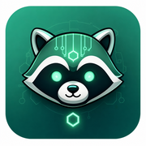
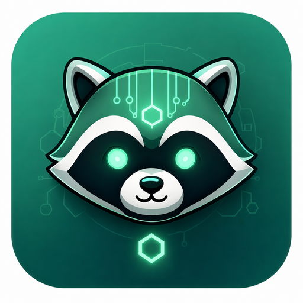
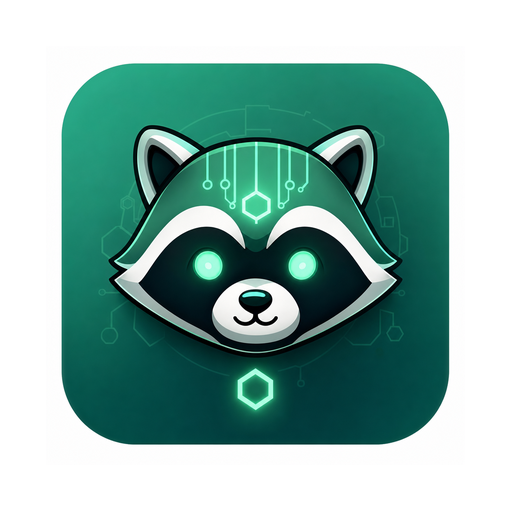

<!-- 把 favicons/ 整个目录复制到 web 应用 public/ 下,路径按需改 --> <link rel="icon" href="/favicons/favicon.ico" sizes="any"> <link rel="icon" type="image/png" sizes="32x32" href="/favicons/favicon-32x32.png"> <link rel="icon" type="image/png" sizes="16x16" href="/favicons/favicon-16x16.png"> <link rel="apple-touch-icon" sizes="180x180" href="/favicons/apple-touch-icon.png"> <link rel="manifest" href="/favicons/site.webmanifest"> <meta name="theme-color" content="#0b0d12">
ui/apps/web-antd/public/favicons/,在 index.html 的 <head> 加上面 link 标签即可。